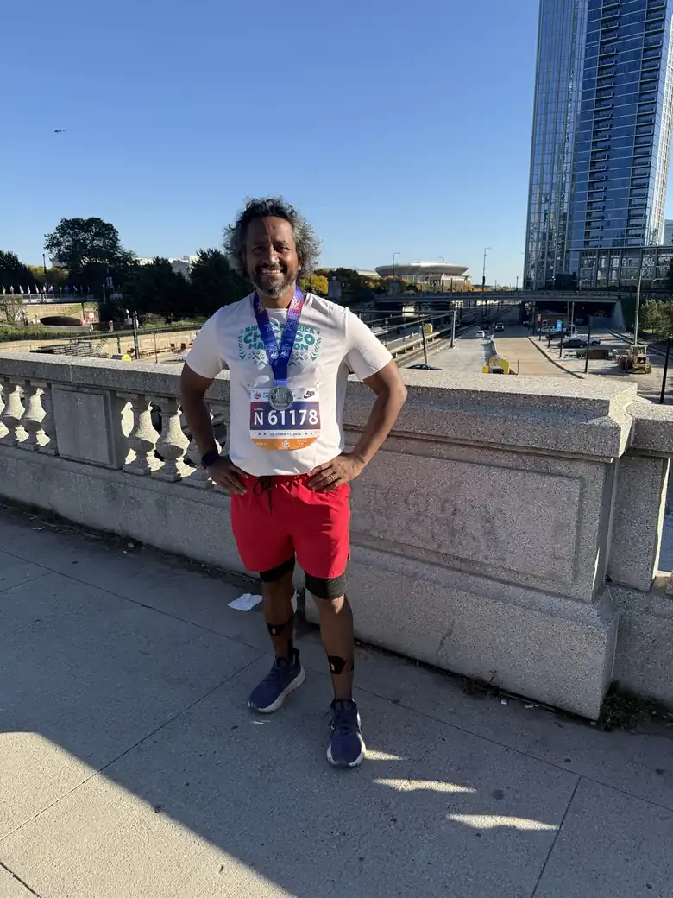
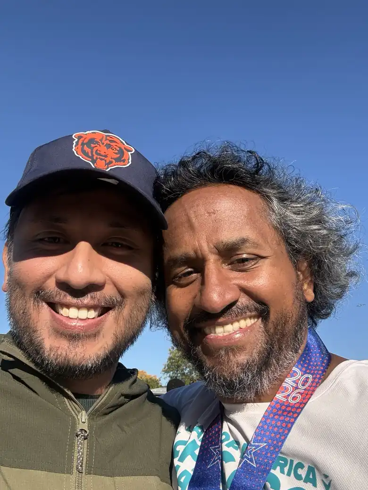
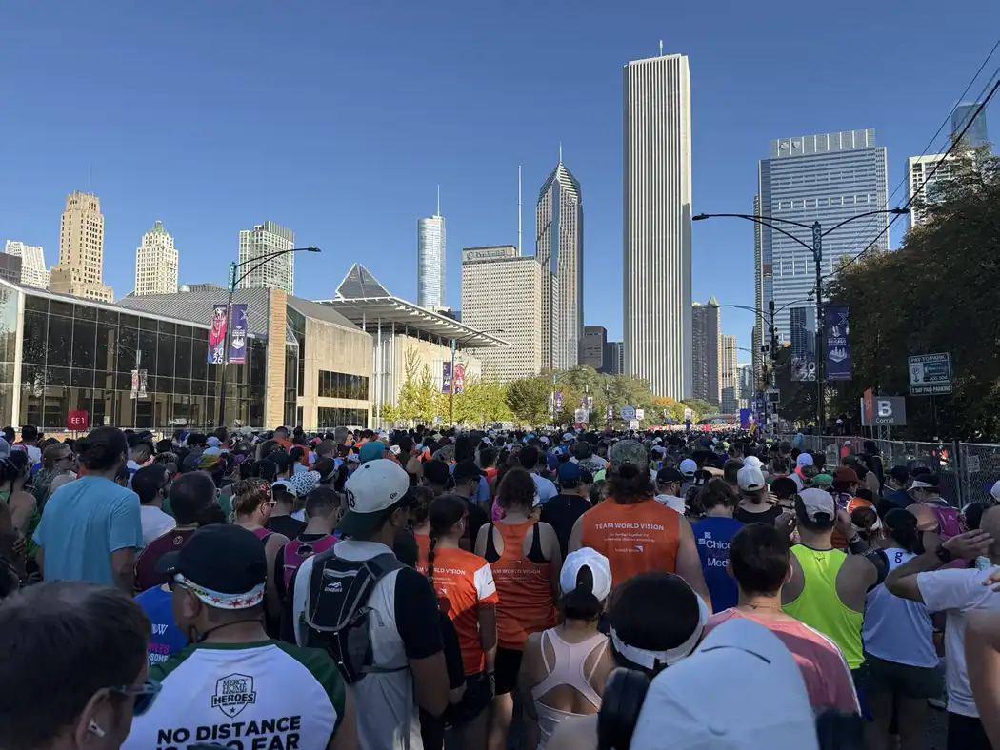
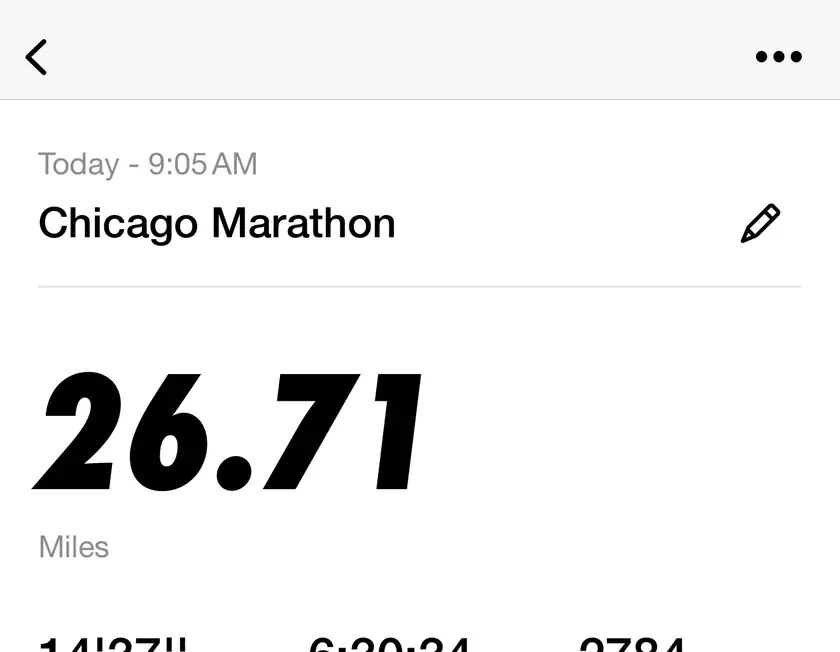
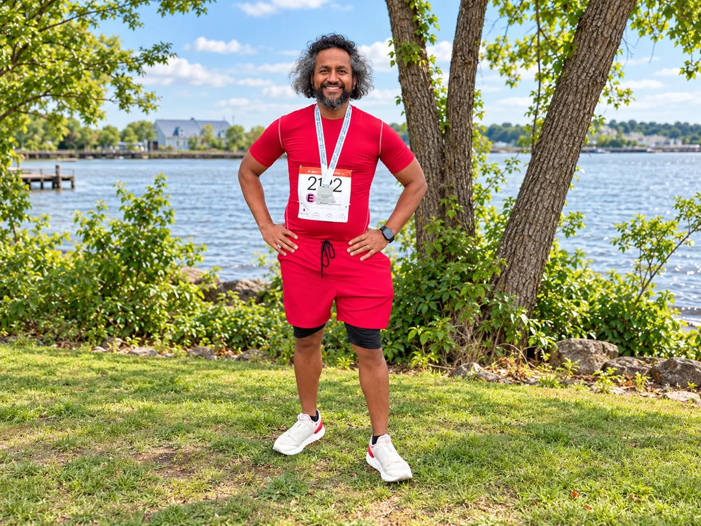
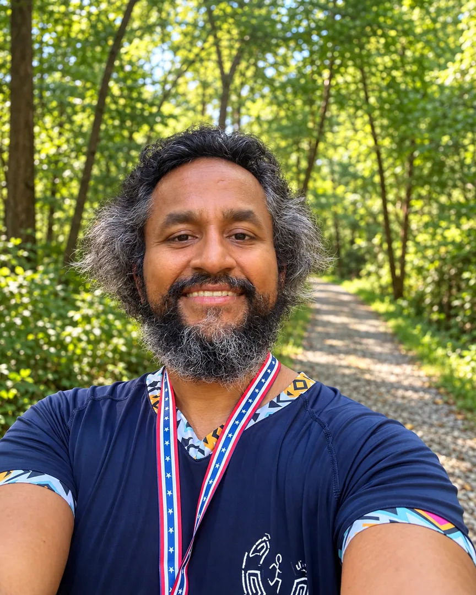
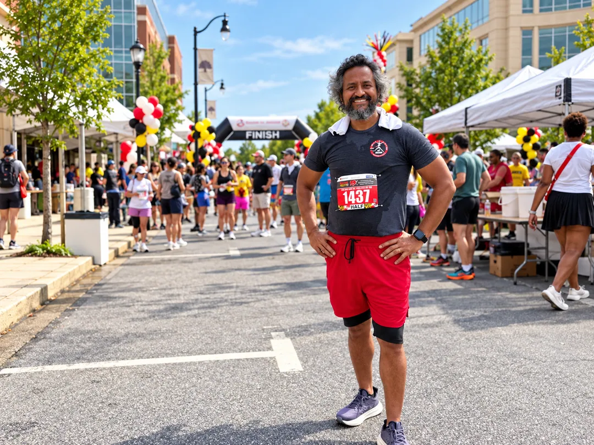
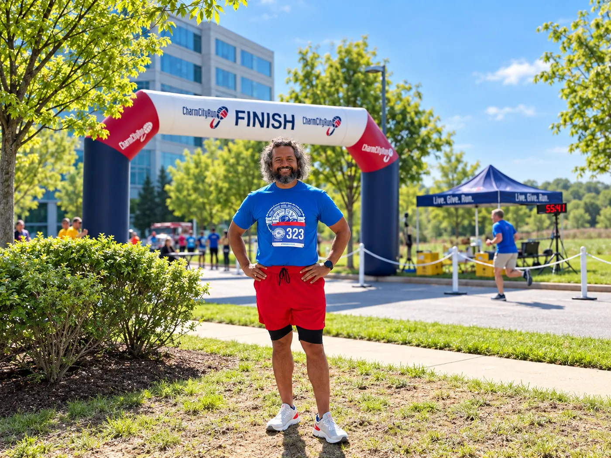
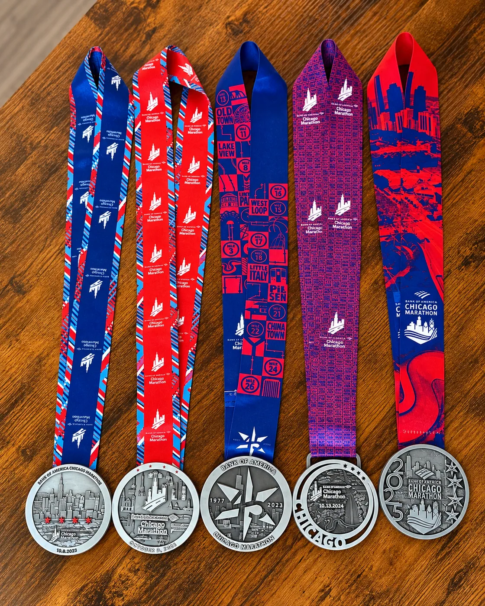
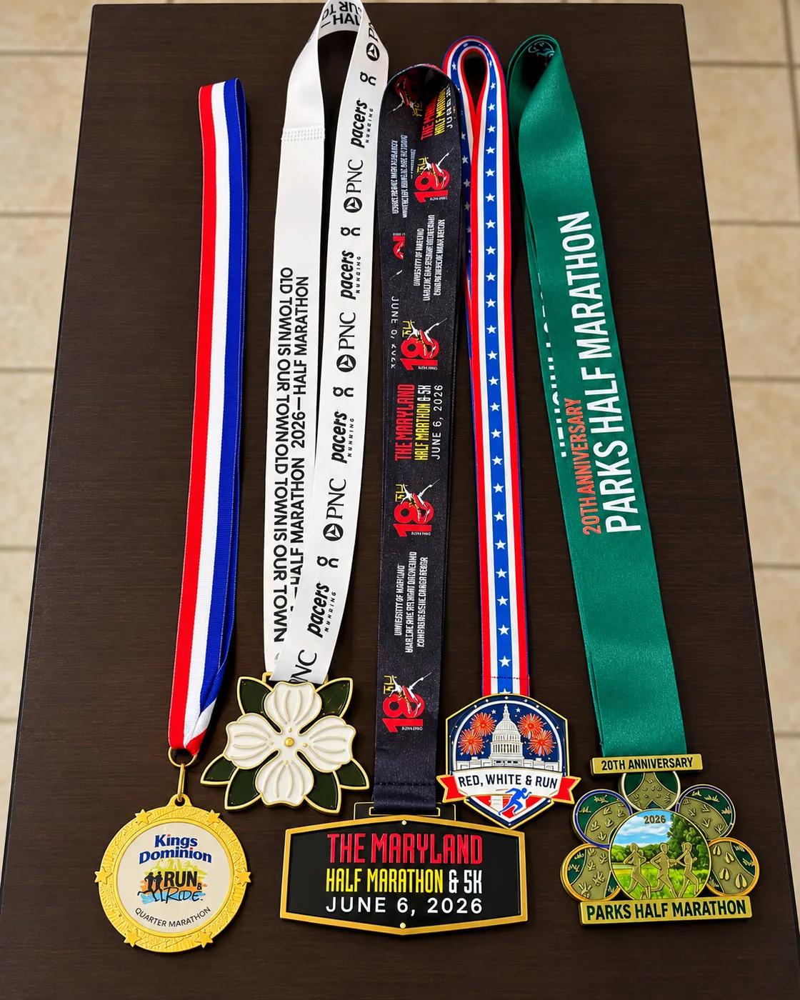

Every gift goes directly to Jericho through its official donation page. This website does not collect payments. The reported gifts below have not yet been confirmed as marathon-related contributions.
Fundraising updates: I'll keep this page updated throughout October as Jericho Circle Project confirms which donations are connected to my marathon fundraiser. Thank you for your continued support!
One small favor: In the donation form’s optional Comment field, please write “Chicago Marathon 2026 — Chatterpaul” so Jericho can identify gifts connected to this run.
Thank you for the generosity!
Jericho's October 12 report lists donations received during marathon weekend. We're grateful for each gift while we work with Jericho to confirm which contributions were inspired by this run.
Attribution pending: These are donations listed in Jericho's general giving report, not a verified marathon-specific total. Gifts from other dates are not included in this snapshot. I'll replace this illustrative figure with the confirmed fundraiser amount when Jericho provides it.
A tough race, filled with joy and the blessings of community.
I completed my sixth Chicago Marathon! It wasn't an easy 26.2 miles. There were tired legs and difficult stretches, but there was also so much happiness in being part of something bigger than myself.
The spirit of the runners around me, the incredible Chicago crowds, and the volunteers who showed up with water, encouragement, energy, and kindness made the day special. I'm grateful for every person who cheered, volunteered, reached out, or sent a message. Even when the miles were hard, I felt supported and connected.
That shared humanity is also what I treasure about Jericho Circle Project. Thank you for helping me turn a demanding race into a day of joy, gratitude, and purpose. 💛
These are my watch-recorded activity statistics, not certified course distance or official chip time. The Chicago Marathon course is 26.2 miles; personal GPS devices can record more.




See my Chicago Marathon results.
The race is complete! The official Chicago Marathon results site is the place to look up timing splits and my certified race result.
How to find my official result
- Open the 2026 Chicago Marathon results website using the link below.
- Search for bib 61178 or Chatterpaul Joseph.
- Select my runner profile to view the official race time and timing checkpoints when posted.
Official results may take some time to appear. You can also share a memory or message from race day.
Jericho became part of my own healing, not just a cause I support.
I joined Jericho because I believed in its mission of bringing healing and human connection into prisons. What I didn’t expect was how deeply the experience would affect my own life.
In Jericho circles, inside prisons and beyond the walls, we listen, share, and do our own emotional work together. The labels start to matter less. What stays with me is how much we have in common: our struggles, our hopes, and our capacity to grow.
Jericho helped me through a difficult period and continues to be a place where I learn about myself. Running this marathon is my way of giving something back—and inviting others into that spirit of connection.
“I went to Jericho believing in the work. I stayed because I discovered how much I needed it, too.”

What is Jericho Circle Project?
Jericho Circle Project creates spaces for emotional healing, accountability, personal growth, and human connection with people inside prisons, returning citizens, and volunteers.
Jericho is not about volunteers going inside to “fix” someone else. Everyone in circle is invited to listen, be honest, and do their own work. That shared humanity is what makes it meaningful to me.
Your support helps Jericho:
- Train volunteers and Inside Circle Guides.
- Employ returning citizens as community circle leaders.
- Expand healing circles beyond prison walls.
Donations are made on Jericho’s official website. This personal fundraising page does not collect money or payment details.
Donate Directly to JerichoTraining miles, finish lines, and a new chapter in the DMV.
Since moving to the DMV, I’ve kept up my daily walking and running—averaging about five miles a day this year. Here are a few of the races and moments that have carried me toward Chicago.



New places to run, familiar reasons to keep going.
The medals tell part of the story.
Six Chicago Marathons are now behind me. Every finish tells a story of perseverance and the people who helped me get there. This year’s race was especially meaningful as I ran in support of Jericho.

Chicago Marathon history
A look back at the five medals that led up to this year’s hard-earned sixth finish.

2026 DMV race season
Recent races near my new home—small milestones on the road back to Chicago.
Your encouragement meant so much.
Thank you to everyone who sent a message, shared a photo, cheered from the course, or followed along from afar. I would love to hear your race-day memories, photos, and messages on my public Facebook marathon post—or in a private note by email.
26.2 miles. One shared humanity.
To the volunteers, fellow runners, cheering crowds, family, and friends: thank you for helping me reach the finish. The miles were tough, but the love and collective spirit were unforgettable. If this story speaks to you, you can still support Jericho Circle Project directly through its official donation page.
Donate to Jericho— Chatterpaul